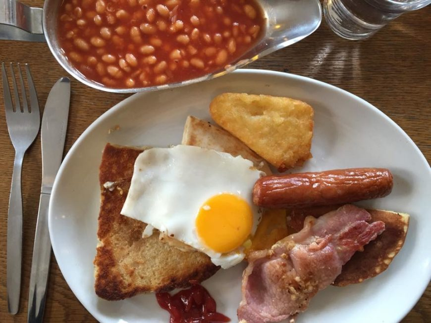

| The Pocket Look for a bright yellow door near the Lanyon building and you’ll find one of the smallest cafes in Belfast. Whilst it fills up quick it’s always worth the short wait for a table! Each month the menu changes, and with weekend specials including their famed donuts, you’ll never run out of options! Last month their pork and apricot meatballs with giant couscous had my mouth watering as well as their blueberry and thyme cake! I’m still waiting for their tahini glazed donuts with pomegranate to make a come-back, and the second they do, you’ll know where to find me! (As you might be able to tell...this is a personal favourite spot of mine! Plus the prices are still low for delicious food that even on a student budget like me you can afford to treat yourself every now and then!) https://www.thepocket.coffee/ |
|
|  | Maggie Mays One of the most popular cafes in Belfast, especially with the students, Maggie Mays offers hearty portions extending from all day breakfast to comforting chilli, and of course goujons with sweet chilli sauce (a Belfast favourite). If you’re in the market for a meal out that fills you up but doesn’t leave a guilty hole in your pockets, this is definitely a good shout! Pro tip: If you really want to indulge yourself, don’t resist their mega milkshakes, from Kinder Bueno to Jammy Dodger the choices are endless! http://maggiemaysbelfastcafe.co.uk/ |
| French Village If you’re feeling like treating yourself, head to one of the two French Villages in Belfast. The first in Botanic is a café/bistro where you’ll find the most delicious sandwiches on your choice or bread, ciabatta, wrap or panini with fillings to suit everyone, my personal favourite is the Bang Bang Marinated Chicken, Dromona Cheddar Cheese, Jalapeños, Spicy Rocket, Chilli Lime & Coriander Mayonaise (heaven). The second is on the Lisburn Road which is styled more like a French patisserie/brasserie which serves your choice of charcuterie or mezze platters as well as classic pastries and macarons. For an indulgent treat head there for Sunday brunch to end the week on a high. http://www.frenchvillagebelfast.co.uk/ |
|

|
Umi Falafal The name Umi was chosen as it is the Arabic word for mother, highlighting the care and love they put into their food! An extensive selection of mezze gives you the option to try the cooking from the Middle East such as, batata hara (spiced potato wedges), baba ghanoush (a grilled aubergine puree) and dolmades (stuffed vine leaves). But the obvious highlight are their falafels which can be served with the mezze or added to any of their salads! To wash it all down I would recommend one of their freshly squeezed juices or their minted lemonade. A lighter lunch packed with flavour! http://umifalafel.ie/ |
| Boojum A true Belfast classic…once you pop your Boojum cherry you’ll never go back, or so they say! So good last year the loyalty card stamp was stolen so one person could try their luck and sneak a few free burritos! Specialising in all things Mexican from tacos to burritos to nachos, even if you want to be a little healthier their burrito bowls are an option, everything but the wrap! Just pick your meat (or veg), rice, beans, salsa and extras and they will make it in front of your eyes. Just remember guacamole is extra! https://www.boojummex.com/ |
|
| Bao Botanic If you’re looking to be a bit more adventurous with your lunch option…look no further than Bao! Served in a Bao Bun which is somewhere in between a Pitta bread and a cloud, you’ll enjoy either ‘hacked’ chicken, pulled beef/pork or tofu which your choice of sauces (hoisin aioli is fusion cooking at its best), picked veg and toppings such as sesame seeds, peanuts or crispy shallots. Trust me on this one, take the plunge you won’t regret it! But if you’re not feeling brave enough to try the bun, topped chips or rice is a good baby step! https://deliveroo.co.uk/menu/belfast/queens-quarter/bao-botanic |